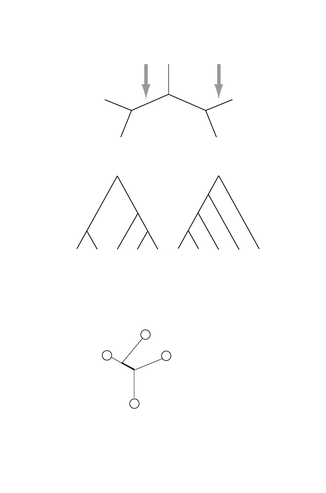

12.2 Tree Terminology
345
2
4
3
1
5
6
7
8
R1
R2
A.
B.
1 2 3 4 5
R1
6
7
8
1 2 3 5 4
R2
6
7
8
Fig. 12.3.
Distinctions between unrooted (panel A) and rooted (panel B) trees. In
panel A, R1 and R2 represent two of the seven possible edges in which the root
could be placed. Rooted trees corresponding to these two placements are shown in
panel B. Note that in the absence of a root, the ancestor-descendant relationships
among the vertices are not established beyond the trivial observation that leaves are
not ancestors. R1 and R2 imply very different ancestors for most taxa.
4
1
2
3
There is now one additional leaf and one additional node; there is one internal
branch (the thick line). The number of internal branches is now
n
−
3 = 4
−
3 =
1. Repeating this step
n
−
4 additional times results in a tree with
n
leaves
and
n
−
4 additional internal branches for a total of
n
−
3 internal branches.